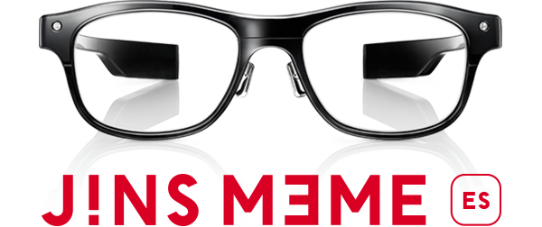

Netcom Developer's Backing #10のまとめ
12/18（金）にNetcom Developer’s Backing #10を行いました。
JINS MEMEを買ったのでご紹介とデモ：高井
JINS MEME Advent Calendar 2015がありますのでそちらにいろいろ情報があります。
http://qiita.com/advent-calendar/2015/jinsmeme
概要

公式webページ：https://jins-meme.com/ja/
センサとBlueToothを内蔵したメガネ。
以下のセンサーで目の動きや頭の動きや傾きなどがbluetooth経由で取得できます。
- 3点式眼電位センサー
- 3軸加速度センサー
- 3軸ジャイロセンサー
開発方法
iOS用のSDKが公開されています（SDKとサンプルアプリはObj-Cです）。
※ Android向けSDKは2016年１月提供予定だそうです。
開発者用アカウントを取得してSDKをダウンロードし、
アプリ登録をするとアプリID、アプリSecretキーが発行される。
これをAppDelegateで設定するとSDKを動かせます。
SDKをダウンロードするとサンプルソースがあるので、そちらから触ってみると良いと思います。
DEVELOPERSサイト
https://developers.jins.com/ja/
取得できるデータ
リアルタイムモード（β版の時点ではスタンダードモードというのも利用できて、一定期間の眠気や集中度なども取得できた）
| 分類 | 名前 | 説明 |
|---|---|---|
| 視線 | eyeMoveUp | 視線が上に動いたかどうかを示す整数値 0：なし 1：移動検知ー小 2：移動検知ー中 3：逆移動検知ー大 4：逆移動検知ー特大 |
| 視線 | eyeMoveDown | 視線が下に動いたかどうかを示す整数値 0：なし 1：移動検知ー小 2：移動検知ー中 3：逆移動検知ー大 4：逆移動検知ー特大 |
| 視線 | eyeMoveLeft | 視線が左に動いたかどうかを示す整数値 0：なし 1：移動検知ー小 2：移動検知ー中 3：逆移動検知ー大 4：逆移動検知ー特大 |
| 視線 | eyeMoveRight | 視線が右に動いたかどうかを示す整数値 0：なし 1：移動検知ー小 2：移動検知ー中 3：逆移動検知ー大 4：逆移動検知ー特大 |
| まばたき | blinkSpeed | まばたきのスピード（Millisecond） |
| まばたき | blinkStrength | まばたきの強さ (一般的に、50～200の間におさまります。) |
| 歩行 | walking | かかとを地面についたかどうか。それを検出するとtrueになる |
| 姿勢 | roll | 姿勢を表す角度のうちのロール要素を示す度 |
| 姿勢 | pitch | 姿勢を表す角度のうちのピッチ要素を示す度 |
| 姿勢 | yaw | 姿勢を表す角度のうちのヨー要素を示す度 |
| 加速度 | accX | 加速度のX軸の値。-128 ~ 127 の1byteの整数値 |
| 加速度 | accY | 加速度のY軸の値。-128 ~ 127 の1byteの整数値 |
| 加速度 | accZ | 加速度のZ軸の値。-128 ~ 127 の1byteの整数値 |
| 着脱 | fitError | JINS MEMEがきちんと装着されているかどうかを示す整数値。 0：エラーなし 1：左鼻パッドエラー 2：右鼻パッドエラー 3：ブリッジエラー |
| バッテリー | powerLeft | 電池残量を表す整数値 0：充電中 1：低電圧 2：Lv2 3：Lv3 4：Lv4 5：満充電 |
公式アプリ
3つリリースされている
* JINS MEME
センサーで得たデータを解析し、集中・活力・落ち着きの3つの指標で精神状態を判定。
* JINS MEME RUN 正しいランニングフォームで走れているかを測定するアプリ。加速度センサー、ジャイロセンサーを使用。
* JINS MEME DRIVE
安全運転をサポートするアプリ。眼球の動きや瞬きを計測して、眠気を検出。
Githubで公開されている公式以外のサンプル
公式サンプルコードをSwiftで書き換えたソース
https://github.com/manchan/JinsMeme-Swift-Sampleアプリ上でセンサデータをグラフ表示するサンプル
https://github.com/shoya140/MEMELogger-iOS-developerssocketioサーバサーバを介してデータをリアルタイムにiOSからmac PCに出力するサンプル https://github.com/mitolog/JINSMEMESampler/tree/master/JINSMEMESampler/AutoLockScreen(socketio)
xx秒ごとにgoogle spread sheetに投げてデータを出力するサンプル
https://github.com/mitolog/JINSMEMESampler/tree/master/JINSMEMESampler/Spreadsheet(POST)流し目でカメラのシャッターを押すサンプル(gist)
https://gist.github.com/manchan/d270366af589034290d5